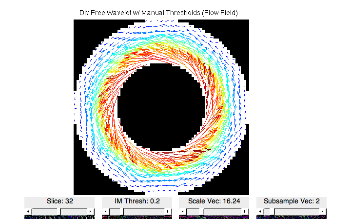
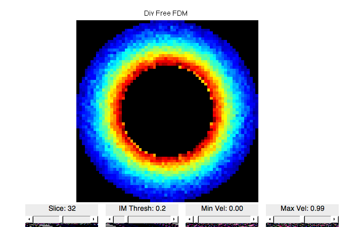

Denoise Simulated Couette flow
The following compares divergence-free wavelet denoising with existing methods on a simulated Couette flow field.
Contents
- Clear all and check path
- Generate flow data and set parameters
- Add Noise
- DivFree Wavelet with Manual Threshold
- DivFree Wavelet with manual threshold and partial cycle spinning
- DivFree Wavelet with SureShrink and MAD sigma estimation
- DivFree Wavelet with SureShrink, MAD and random cycle spinning
- Finite Difference Method
- DivFree Radial Basis Function
- Plot all
- Visualize DivFree Wavelet Coefficients
- Plot Velocity profiles
Clear all and check path
close all clc clear if ~exist('dfwavelet_thresh','file') error('Cannot find dfwavelet functions. run setPath!'); end
Generate flow data and set parameters
N = 64; % Image width Rout = N/2; % Radius of outer cylinder Rin = N/4; % Radius of inner cylinder Win = 10; % vMax = 1; % Maximum velocity % Generate Couette flow field [vx,vy,vz,imMag] = genCouette(vMax,N,Rout,Rin,Win); % Set parameters vMag = sqrt(vx.^2+vy.^2+vz.^2); % Velocity magnitude vMax = max(vMag(:)); % Maximum speed FOV = size(vMag); % Field of view N = FOV(3); % Number of slices (for plotting) res = [1,1,1]; % Relative resolution ph0 = zeros(FOV); % Reference phase in phase contrast imMask = imMag; % Segmentation mask % Plot figure,imshow_flow(imMag,vx,vy,vz,vMax,[1,2,3]),title('Original Flow Field','FontSize',14); figure,imshow_flowmag(imMag,vx,vy,vz,vMax,[1,2,3]),title('Original Velocity Magnitude','FontSize',14); pause(1);

Add Noise
sigma = 0.2*max(imMag(:)); % Noise standard deviation gamma = 26753; % Gyromagnetic ratio of proton * 2pi M1 = pi/(2*vMax*gamma); % First moment % Transform velocity to 5-point method phase encodes [s1,s2,s3,s4,s5] = fivePointPC(vx,vy,vz,imMag,ph0,M1); % Add noise s1 = s1+sigma/sqrt(2)*(randn(FOV)+1i*randn(FOV)); s2 = s2+sigma/sqrt(2)*(randn(FOV)+1i*randn(FOV)); s3 = s3+sigma/sqrt(2)*(randn(FOV)+1i*randn(FOV)); s4 = s4+sigma/sqrt(2)*(randn(FOV)+1i*randn(FOV)); s5 = s5+sigma/sqrt(2)*(randn(FOV)+1i*randn(FOV)); % Transform phase encodes back to velocity [vxN,vyN,vzN,imMagN] = invfivePointPC(s1,s2,s3,s4,s5,M1); % Crop velocities using image mask [vxN,vyN,vzN] = maskIM(imMask,vxN,vyN,vzN); % Plot figure,imshow_flow(imMag,vxN,vyN,vzN,vMax,[1,2,3]),title('Noisy Flow Field','FontSize',14); figure,imshow_flowmag(imMag,vxN,vyN,vzN,vMax,[1,2,3]),title('Noisy Velocity Magnitude','FontSize',14); % Calculate errors in region of interest disp('Noisy Flow Error') [vNRMSE_Noise,vMagErr_Noise,angErr_Noise] = calcVelError(imMask,vx,vy,vz,vxN,vyN,vzN); PVNR = 8*log10(1/vNRMSE_Noise); fprintf('PVNR: \t\t\t%.2fdB\nNRMSE: \t\t\t%f\nvMag Error: \t\t%f\nAbsolute Angle Error: \t%f\n\n',PVNR,vNRMSE_Noise,vMagErr_Noise,angErr_Noise); pause(1);
Noisy Flow Error PVNR: 8.83dB NRMSE: 0.078838 vMag Error: 0.047772 Absolute Angle Error: 0.094471

DivFree Wavelet with Manual Threshold
To denoise, we apply the soft-threshold operation on the divergence-free component and the non-divergence-free component separately
minSize = 8*ones(1,3); % Smallest wavelet level size dfThresh = 0.05; % Threshold for divergence-free components nThresh = 0.08; % Threshold for non-divergence-free components % Forward DivFree Wavelet Transform [wcdf1,wcdf2,wcn,numLevels,wcSizes] = dfwavelet_forward(vxN,vyN,vzN,minSize,res); % Soft Threshold [wcdf1,wcdf2,wcn] = dfsoft_thresh(wcdf1,wcdf2,wcn,minSize,res,FOV,dfThresh,nThresh); % Inverse DivFree Wavelet Transform [vxDFW,vyDFW,vzDFW] = dfwavelet_inverse(wcdf1,wcdf2,wcn,minSize,res,FOV); % Alternatively, you can use the following function to do the same things % as above: % [vxDFW,vyDFW,vzDFW] = dfwavelet_thresh(vxN,vyN,vzN,minSize,res,dfthresh,nthresh); % Plot figure,imshow_flow(imMag,vxDFW,vyDFW,vzDFW,vMax,[1,2,3]) title('Div Free Wavelet w/ Manual Thresholds (Flow Field)','FontSize',14) figure,imshow_flowmag(imMag,vxDFW,vyDFW,vzDFW,vMax,[1,2,3]) title('Div Free Wavelet w/ Manual Thresholds (Vel Mag)','FontSize',14) % Calculate errors disp('DivFree Wavelet w/ Manual Thresholds') [vNRMSE_DFW,vMagErr_DFW,angErr_DFW] = calcVelError(imMask,vx,vy,vz,vxDFW,vyDFW,vzDFW); fprintf('NRMSE: \t\t\t%f\nvMag Error: \t\t%f\nAbsolute Angle Error: \t%f\n\n',vNRMSE_DFW,vMagErr_DFW,angErr_DFW); pause(1);
DivFree Wavelet w/ Manual Thresholds NRMSE: 0.048441 vMag Error: 0.037032 Absolute Angle Error: 0.023616
DivFree Wavelet with manual threshold and partial cycle spinning
To remove the blocking artifacts, we do partial cycle spinning Here we do 2^3=8 random shifts
spins = 2; % Number of cycle spinning per dimension isRandShift = 1; % Use random shift minSize = 8*ones(1,3); % Smallest wavelet level size dfThresh = 0.05; % Threshold for divergence-free components nThresh = 0.08; % Threshold for non-divergence-free components % Initialize velocities vxDFW_s = zeros(FOV); vyDFW_s = zeros(FOV); vzDFW_s = zeros(FOV); % Cycle Spinning for i = 1:spins for j = 1:spins for k = 1:spins % Generate spins if isRandShift shifts = randi(8,1,3) - 1; else shifts = [i,j,k]; end % Circular shift vxN_spin = circshift(vxN, shifts ); vyN_spin = circshift(vyN, shifts ); vzN_spin = circshift(vzN, shifts ); % Forward DivFree Wavelet Transform [wcdf1_s,wcdf2_s,wcn_s,numLevels,wcSizes] = dfwavelet_forward(vxN_spin,vyN_spin,vzN_spin,minSize,res); % Soft Threshold [wcdf1_s,wcdf2_s,wcn_s] = dfsoft_thresh(wcdf1_s,wcdf2_s,wcn_s,minSize,res,FOV,dfThresh,nThresh); % Inverse DivFree Wavelet Transform [vxN_spin,vyN_spin,vzN_spin] = dfwavelet_inverse(wcdf1_s,wcdf2_s,wcn_s,minSize,res,FOV); % Circular unshift vxN_spin = circshift(vxN_spin, -shifts ); vyN_spin = circshift(vyN_spin, -shifts ); vzN_spin = circshift(vzN_spin, -shifts ); % Add back vxDFW_s = vxDFW_s + vxN_spin; vyDFW_s = vyDFW_s + vyN_spin; vzDFW_s = vzDFW_s + vzN_spin; end end end vxDFW_s = vxDFW_s/spins^3; vyDFW_s = vyDFW_s/spins^3; vzDFW_s = vzDFW_s/spins^3; % Alternatively, you can use the following function to do the same things % as above: % [vxDFW_s,vyDFW_s,vzDFW_s] = dfwavelet_thresh_spin(vxN,vyN,vzN,minSize,res,dfthresh,nthresh,spins,isRandShift); % Plot figure,imshow_flow(imMag,vxDFW_s,vyDFW_s,vzDFW_s,vMax,[1,2,3]) title('Div Free Wavelet w/ Manual Thresholds and Partial Cycle Spinning (Flow Field)','FontSize',14) figure,imshow_flowmag(imMag,vxDFW,vyDFW,vzDFW,vMax,[1,2,3]) title('Div Free Wavelet w/ Manual Thresholds and Partial Cycle Spinning(Vel Mag)','FontSize',14) % Calculate errors disp('DivFree Wavelet w/ Manual Thresholds and Partial Cycle Spinning') [vNRMSE_DFW_s,vMagErr_DFW_s,angErr_DFW_s] = calcVelError(imMask,vx,vy,vz,vxDFW_s,vyDFW_s,vzDFW_s); fprintf('NRMSE: \t\t\t%f\nvMag Error: \t\t%f\nAbsolute Angle Error: \t%f\n\n',vNRMSE_DFW_s,vMagErr_DFW_s,angErr_DFW_s); pause(1);
DivFree Wavelet w/ Manual Thresholds and Partial Cycle Spinning NRMSE: 0.032196 vMag Error: 0.024539 Absolute Angle Error: 0.014880
DivFree Wavelet with SureShrink and MAD sigma estimation
Here, we use Median Absolute Deviation to estimate noise std and then use SureShrink to find the optimal threshold that minimizes MSE
minSize = 8*ones(1,3); % Smallest wavelet level size percentZero = sum(imMask(:)==0)/numel(imMask); % Percentage of masked elements % Forward DivFree Wavelet Transform [wcdf1_sm,wcdf2_sm,wcn_sm,numLevels,wcSizes] = dfwavelet_forward(vxN,vyN,vzN,minSize,res); % Estimate noise standard deviation in velocity est_sigma = getMADsigma(wcn_sm,minSize,res,FOV,percentZero); % SureShrink [wcdf1_sm,wcdf2_sm,wcn_sm] = dfSUREshrink(wcdf1_sm,wcdf2_sm,wcn_sm,minSize,res,FOV,percentZero,est_sigma); % Inverse DivFree Wavelet Transform [vxDFW_sm,vyDFW_sm,vzDFW_sm] = dfwavelet_inverse(wcdf1_sm,wcdf2_sm,wcn_sm,minSize,res,FOV); % Alternatively, you can use the following function to do the same things % as above: % [vxDFW_sm,vyDFW_sm,vzDFW_sm] = dfwavelet_thresh_SURE_MAD(vxN,vyN,vzN,minSize,res); % Plot figure,imshow_flow(imMag,vxDFW_sm,vyDFW_sm,vzDFW_sm,vMax,[1,2,3]) title('Div Free Wavelet w/ SureShrink (Flow Field)','FontSize',14) figure,imshow_flowmag(imMag,vxDFW_sm,vyDFW_sm,vzDFW_sm,vMax,[1,2,3]) title('Div Free Wavelet w/ SureShrink (Vel Mag)','FontSize',14) % Calculate errors disp('DivFree Wavelet w/ SureShrink and MAD') [vNRMSE_DFW_sm,vMagErr_DFW_sm,angErr_DFW_sm] = calcVelError(imMask,vx,vy,vz,vxDFW_sm,vyDFW_sm,vzDFW_sm); fprintf('NRMSE: \t\t\t%f\nvMag Error: \t\t%f\nAbsolute Angle Error: \t%f\n\n',vNRMSE_DFW_sm,vMagErr_DFW_sm,angErr_DFW_sm); pause(1);
DivFree Wavelet w/ SureShrink and MAD NRMSE: 0.034796 vMag Error: 0.027149 Absolute Angle Error: 0.014671
DivFree Wavelet with SureShrink, MAD and random cycle spinning
We do partial cycle spinning with SureShrink to further improve the performance
spins = 2; % Number of cycle spinning per dimension isRandShift = 1; % Use random shift minSize = 8*ones(1,3); % Smallest wavelet level size % Initialize velocities vxDFW_sms = zeros(FOV); vyDFW_sms = zeros(FOV); vzDFW_sms = zeros(FOV); % Cycle Spinning for i = 1:spins for j = 1:spins for k = 1:spins % Generate spins if isRandShift shifts = randi(8,1,3) - 1; else shifts = [i,j,k]; end % Circular shift vxN_spin = circshift(vxN, shifts ); vyN_spin = circshift(vyN, shifts ); vzN_spin = circshift(vzN, shifts ); % Forward DivFree Wavelet Transform [wcdf1_sms,wcdf2_sms,wcn_sms,numLevels,wcSizes] = dfwavelet_forward(vxN_spin,vyN_spin,vzN_spin,minSize,res); % Estimate noise standard deviation in velocity est_sigma = getMADsigma(wcn_sms,minSize,res,FOV,percentZero); % SureShrink [wcdf1_sms,wcdf2_sms,wcn_sms] = dfSUREshrink(wcdf1_sms,wcdf2_sms,wcn_sms,minSize,res,FOV,percentZero,est_sigma); % Inverse DivFree Wavelet Transform [vxN_spin,vyN_spin,vzN_spin] = dfwavelet_inverse(wcdf1_sms,wcdf2_sms,wcn_sms,minSize,res,FOV); % Circular unshift vxN_spin = circshift(vxN_spin, -shifts ); vyN_spin = circshift(vyN_spin, -shifts ); vzN_spin = circshift(vzN_spin, -shifts ); % Add back vxDFW_sms = vxDFW_sms + vxN_spin; vyDFW_sms = vyDFW_sms + vyN_spin; vzDFW_sms = vzDFW_sms + vzN_spin; end end end vxDFW_sms = vxDFW_sms/spins^3; vyDFW_sms = vyDFW_sms/spins^3; vzDFW_sms = vzDFW_sms/spins^3; % Alternatively, you can use the following function to do the same things % as above: % [vxDFW_sms,vyDFW_sms,vzDFW_sms] = dfwavelet_thresh_SURE_MAD_spin(vxN,vyN,vzN,minSize,res,spins,isRandShift); % Plot figure,imshow_flow(imMag,vxDFW_sms,vyDFW_sms,vzDFW_sms,vMax,[1,2,3]) title('Div Free Wavelet w/ SureShrink and Partial Cycle Spinning (Flow Field)','FontSize',14) figure,imshow_flowmag(imMag,vxDFW_sms,vyDFW_sms,vzDFW_sms,vMax,[1,2,3]) title('Div Free Wavelet w/ SureShrink and Partial Cycle Spinning (Vel Mag)','FontSize',14) % Calculate errors disp('DivFree Wavelet w/ SureShrink, MAD and Partial Cycle Spinning') [vNRMSE_DFW_sms,vMagErr_DFW_sms,angErr_DFW_sms] = calcVelError(imMask,vx,vy,vz,vxDFW_sms,vyDFW_sms,vzDFW_sms); fprintf('NRMSE: \t\t\t%f\nvMag Error: \t\t%f\nAbsolute Angle Error: \t%f\n\n',vNRMSE_DFW_sms,vMagErr_DFW_sms,angErr_DFW_sms); pause(1);
DivFree Wavelet w/ SureShrink, MAD and Partial Cycle Spinning NRMSE: 0.022368 vMag Error: 0.018292 Absolute Angle Error: 0.006091
Finite Difference Method
The following implements finite difference method denoising as described in: Song SM, Pelc NJ., et al. JMRI 1993 Noise reduction in three-dimensional phase-contrast MR velocity measurementsl.
% FDM Denoise [vxFDM,vyFDM,vzFDM] = fdmDenoise(vxN,vyN,vzN,res); % Plot figure,imshow_flow(imMag,vxFDM,vyFDM,vzFDM,vMax,[1,2,3]) title('Div Free FDM','FontSize',14) figure,imshow_flowmag(imMag,vxFDM,vyFDM,vzFDM,vMax,[1,2,3]) title('Div Free FDM','FontSize',14) % Calculate errors disp('Finite Difference Method Error') [vNRMSE_FDM,vMagErr_FDM,angErr_FDM] = calcVelError(imMask,vx,vy,vz,vxFDM,vyFDM,vzFDM); fprintf('NRMSE: \t\t\t%f\nvMag Error: \t\t%f\nAbsolute Angle Error: \t%f\n\n',vNRMSE_FDM,vMagErr_FDM,angErr_FDM); pause(1);
Finite Difference Method Error NRMSE: 0.075755 vMag Error: 0.047040 Absolute Angle Error: 0.080547
DivFree Radial Basis Function
The following implements divergence-free radial basis function denoising as described in: Busch J, Kozerke S., et al. MRM 812 Construction of divergence-free velocity fields from cine 3D phase-contrast flow measurements.
radius = 3; % Radius of kernel nIter = 15; % Number of iterations for lsqr % Plot during iterations, if on, does gradient descent instead of lsqr doplot = 0; % RBF Denoise [vxRBF,vyRBF,vzRBF] = rbfDenoise(vxN,vyN,vzN,imMask,radius,res,nIter,doplot); % Plot figure,imshow_flow(imMag,vxRBF,vyRBF,vzRBF,vMax,[1,2,3]), title('Div Free RBF','FontSize',14) figure,imshow_flowmag(imMag,vxRBF,vyRBF,vzRBF,vMax,[1,2,3]), title('Div Free RBF','FontSize',14) % Calculate Error disp('Radial Basis Function Error') [vNRMSE_RBF,vMagErr_RBF,angErr_RBF] = calcVelError(imMask,vx,vy,vz,vxRBF,vyRBF,vzRBF); fprintf('NRMSE: \t\t\t%f\nvMag Error: \t\t%f\nAbsolute Angle Error: \t%f\n\n',vNRMSE_RBF,vMagErr_RBF,angErr_RBF); pause(1);
RBF Denoising... done Radial Basis Function Error NRMSE: 0.034087 vMag Error: 0.023883 Absolute Angle Error: 0.037344

Plot all
Plotting results from all methods. Notice how DFW has less errors near edges than other methods
figure,imshow_flowmag(... cat(1,cat(2,imMask,imMask,imMask,imMask),cat(2,imMask,imMask,imMask,imMask)),... cat(1,cat(2,vx,vxN,vxDFW,vxDFW_s),cat(2,vxDFW_sm,vxDFW_sms,vxFDM,vxRBF)),... cat(1,cat(2,vy,vyN,vyDFW,vyDFW_s),cat(2,vyDFW_sm,vyDFW_sms,vyFDM,vyRBF)),... cat(1,cat(2,vz,vzN,vzDFW,vzDFW_s),cat(2,vzDFW_sm,vzDFW_sms,vzFDM,vzRBF)),... vMax,[1,2,3]); title('(Top row) Original,Noisy, DFW/manual, DFW/manual/spin (Bottom Row) DFW/SURE, DFW/SURE/spin, FDM,RBF','FontSize',14) pause(1);

Visualize DivFree Wavelet Coefficients
% Wavelet coefficients for original minSize = 8*ones(1,3); [wcdf1,wcdf2,wcn,numLevels,wcSizes] = dfwavelet_forward(vx,vy,vz,minSize,res); wcdf1_tile = wcTile(wcdf1,numLevels,wcSizes); wcdf2_tile = wcTile(wcdf2,numLevels,wcSizes); wcn_tile = wcTile(wcn,numLevels,wcSizes); % Wavelet coefficients for noisy [wcdf1N,wcdf2N,wcnN,numLevels,wcSizes] = dfwavelet_forward(vxN,vyN,vzN,minSize,res); wcdf1N_tile = wcTile(wcdf1N,numLevels,wcSizes); wcdf2N_tile = wcTile(wcdf2N,numLevels,wcSizes); wcnN_tile = wcTile(wcnN,numLevels,wcSizes); % Wavelet coefficeints for div free wavelet w/ cycle spinning [wcdf1_sms,wcdf2_sms,wcn_sms,numLevels,wcSizes] = dfwavelet_forward(vxDFW_sms,vyDFW_sms,vzDFW_sms,minSize,res); wcdf1_sms_tile = wcTile(wcdf1_sms,numLevels,wcSizes); wcdf2_sms_tile = wcTile(wcdf2_sms,numLevels,wcSizes); wcn_sms_tile = wcTile(wcn_sms,numLevels,wcSizes); % Plot figure,imshow3f(abs(cat(2,wcn_tile,wcnN_tile,wcn_sms_tile)),[1,2,3],round(N/8)),title('Non-divfree wavelet subbands for Original, Noisy and DFW','FontSize',14); pause(1);

Plot Velocity profiles
figure,plot3f(cat(2,vx,vxN,vxDFW_sms),[1,2,3]), title('Velocity profiles for Original,Noisy, and DFW/spin','FontSize',14);